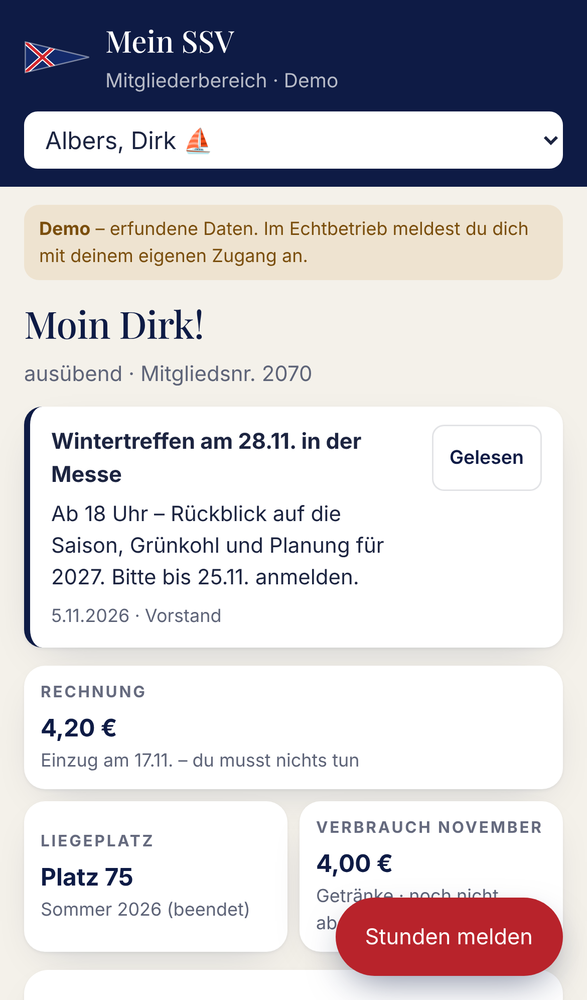
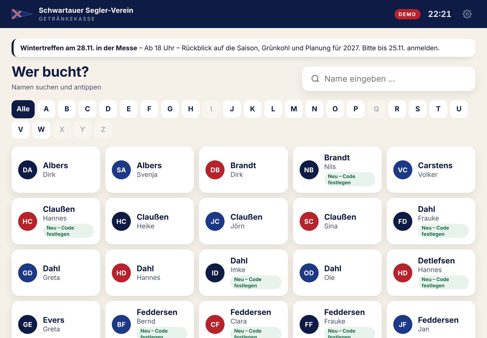
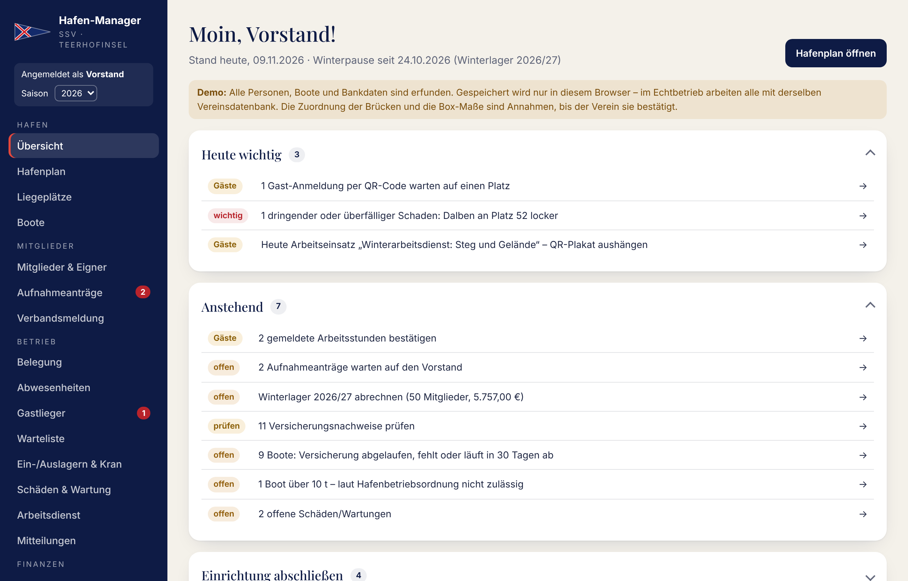

Website, Mein SSV, Hafen-Manager und Getränkekasse
Kurzanleitung für den Schwartauer Segler-Verein e.V. · Stand November 2026
Das Programm ersetzt easyVerein und bündelt alles, was der Verein rund um Mitglieder, Hafen und Getränke braucht – auf einer gemeinsamen Vereinsdatenbank (Server in Frankfurt). Jede Person sieht nur, was zu ihrer Aufgabe gehört; Mitglieder sehen nur ihre eigenen Daten.
Website
Vereinsseite mit Terminen, Jugend, Hafen und Galerie. Die Redaktion pflegt Hinweise, Termine und Fotos selbst – ohne Technik.
Mein SSV
Persönlicher Bereich für jedes Mitglied: Rechnungen, Liegeplatz, grünes Schild, Arbeitsdienst, Mitteilungen.
Hafen-Manager
Verwaltung für Vorstand, Kassenwart, Brückenwartin und Hafenmeister: Mitglieder, Plätze, Gäste, Abrechnung, Lastschrift.
Getränkekasse
iPad im Vereinsheim: Name antippen, Code eingeben, buchen. Abrechnung monatlich per Lastschrift.
Gast-Anmeldung
QR-Code am Steg – Gäste melden sich in Deutsch, Englisch oder Dänisch an.
Aufnahmeantrag
Online mit Lastschriftmandat; der Vorstand nimmt mit einem Klick auf.
Für Mitglieder: „Mein SSV“
Anmelden
Auf der Website oben rechts „Mein SSV“ antippen. Beim ersten Mal „Konto anlegen“ – mit der E-Mail-Adresse, die der Verein von dir hat. Passwort vergessen? Über „Passwort vergessen“ neu setzen. Tipp fürs Handy: Teilen → Zum Home-Bildschirm.
Auf einen Blick
Rechnung: Betrag und Klartext, z. B. „Einzug am 17.11. – du musst nichts tun“. Bezahlte Rechnungen auf Wunsch über „Bezahlte Rechnungen ansehen“.
Liegeplatz / Winterlager und Getränke-Verbrauch des Monats.
Mitteilungen des Vereins stehen ganz oben (wichtige in Rot, z. B. Sturmwarnung).
Was du selbst erledigen kannst
Platz frei melden (grünes Schild) – und „Früher zurück“, wenn du eher wieder da bist.
Versicherungsnachweis hochladen (Foto oder PDF) – der Verein prüft und hakt ab.
Arbeitsstunden: beim Arbeitseinsatz QR-Code am Vereinsheim scannen oder Stunden selbst melden; der Verein bestätigt.
Auf Wunsch Benachrichtigungen aufs Handy (sobald der Vorstand das freischaltet).
Offen sind beim Start nur Rechnungen, Boot und Arbeitsdienst (am Handy nur die Rechnungen) – alles andere zeigt oben eine kurze Zusammenfassung und klappt beim Antippen auf. Am Handy führt der große rote Knopf unten rechts direkt zur wichtigsten Aktion.

Mein SSV am Handy (Demo-Daten)
Getränkekasse am iPad
Namen antippen (Suche oder Buchstabe).
4-stelligen Code eingeben. Erstes Mal: Mitgliedsnummer eingeben und den Code selbst festlegen.
Getränke antippen (Stück oder Kasten) → „Jetzt buchen“.
Fehlbuchung? Unter „Verlauf“ innerhalb von 15 Minuten rückgängig machen.
Ohne WLAN bucht die Kasse trotzdem weiter und trägt alles nach, sobald das Netz wieder da ist. Lässt sich etwas nicht verbuchen (z. B. Code falsch), steht oben rechts „⚠ nicht verbucht“ – bitte dem Kassenwart melden.
Jugendschutz: Getränke mit Altersgrenze sieht nur, wer alt genug ist.
Einrichtung: Kassenwart öffnet am iPad den Kassenwart-Bereich → Einstellungen → „Dieses Gerät als Kasse einrichten“, dann Zum Home-Bildschirm und Geführten Zugriff aktivieren.

Startbildschirm der Kasse, oben eine Mitteilung des Vereins
Für Funktionsträger: der Hafen-Manager
Anmeldung mit eigenem Konto (vergibt der Vorstand). Nach 30 Minuten ohne Eingabe wird automatisch abgemeldet. Die Übersicht sortiert alles in Heute wichtig (Konflikte, Ankünfte, dringende Schäden, Rücklastschriften), Anstehend (Abrechnungen, Nachweise, Stunden bestätigen) und Einrichtung abschließen – je Gruppe höchstens fünf Punkte, der Rest hinter „+ weitere“; das Etikett nennt das Thema (Gäste, Arbeitsdienst, Boote, Geld …). In Tabellen steht je Zeile nur die wichtigste Aktion, alles Weitere hinter ⋯. Das Menü hat sieben Bereiche – Übersicht, Hafen, Gäste & Schild, Mitglieder & Boote, Betrieb, Finanzen, Verwaltung; innerhalb eines Bereichs wechseln die Reiter oben auf der Seite. Jeder sieht nur, was zu seiner Rolle gehört.

Übersicht des Hafen-Managers (Vorstand, Demo-Daten)
Rolle
Typische Aufgaben
Hafenmeister
Gäste einweisen (Platzvorschlag prüft Freigabe, Maße und Tiefgang), Zahlung und Quittung, Abwesenheiten, Kran, Schäden, Arbeitsstunden bestätigen, Mitteilungen. Schnellknopf am Handy: „+ Gast einweisen“.
Brückenwartin
Belegung Sommer/Winter, Warteliste, Boote und Versicherungsnachweise prüfen, Liegeplatz-Maße (als Tabelle), Ein-/Auslagern, Arbeitsdienst und Arbeitseinsätze mit QR-Plakat.
Kassenwart
Beiträge und Hafengebühren abrechnen, Lastschrift-Datei für die Bank (SEPA), Zahlungen/Teilzahlungen und Rücklastschriften buchen, Mitglieder-Import (CSV aus easyVerein), Verbandsmeldung, Gebührenordnung, Änderungsverlauf.
Vorstand
Alles, dazu Aufnahmeanträge entscheiden, Mitteilungen (z. B. Sturmwarnung), Einstellungen und Regeln, Zugänge.
Redaktion
Website-Inhalte unter /website/verwaltung/.
Wichtige Abläufe in Kürze
Gäste: Gast macht am grünen Schild fest, scannt den QR-Code, gibt die Platznummer an und bezahlt gleich: GiroCode mit der Banking-App scannen (IBAN, Betrag, Verwendungszweck sind ausgefüllt), PayPal oder bar – niemand muss kommen. Nach der Zahlung zeigt die Seite den Toilettencode (Gäste & Schild → „Code ändern“, auch: erst nach bestätigtem Eingang). Am Steg zeigt „Zahl-QR“ den GiroCode für einen Gast. Gäste & Schild zeigt je Gast drei Angaben – Aufenthalt (kommt, im Hafen, reist heute ab, Abreise prüfen), Platz und Zahlung (offen, vom Gast gemeldet – noch nicht geprüft, bezahlt) – und die Ansichten Heute & offen · Anreisen · Im Hafen · Abreisen · Archiv. Unter „Heute & offen“ steht nur, was zu tun ist: Eingang bestätigen, Platz eintragen, Abreise bestätigen („Abgereist“), Zahl-QR zeigen.
Mitgliedsakte: Mitglieder & Boote → Name antippen: Kontakt, Lastschrift, Boote und Plätze, Arbeitsdienst und Gruppen, alle Rechnungen (Hafen, Beitrag, Getränke), Dokumente und der Änderungsverlauf aller zugehörigen Datensätze (Mitglied, Bankdaten, Boote, Belegungen, Rechnungen, Stunden). „Bearbeiten“ öffnet die Stammdaten, danach geht es zurück in die Akte.
Gebührenordnung in Fassungen: Finanzen → Gebührenordnung → „+ Neue Fassung“ ab der Saison, ab der neue Preise gelten (Beiträge ab 1.1., Liegeplätze ab dieser Saison). Die Abrechnung nimmt automatisch die passende Fassung; bereits erstellte Rechnungen ändern sich nie.
Finanzen → Übersicht: je Jahr Beiträge, Sommerliegeplätze, Winterlager, Gastlieger und Getränkekasse – berechnet, eingegangen, offen, zu klären – und die Eingänge je Monat zum Abgleich mit dem Kontoauszug.
Abrechnung (geführt in 5 Schritten): Finanzen → Abrechnung & Lastschrift → Periode wählen. Die Schrittleiste zeigt, was erledigt ist und was jetzt dran ist: 1 Prüfen (Prüfliste: Vereinskonto, Steuerhinweis, Gebühren-Fassung, Saisontermine, Anschriften, Mandate) → 2 Erstellen → 3 Zustellen (alle als PDF, „Als zugestellt vermerken“) → 4 Lastschrift → 5 Zahlungseingang. Im Einzelnen: Vorschau prüfen → „Rechnungen erstellen“ (doppelt klicken oder zwei Personen gleichzeitig erzeugen keine doppelten Rechnungen) → „SEPA-Datei erzeugen“ und im Online-Banking hochladen. Ist das Geld da: bei der Datei „Gutschrift ist da“ – alle Posten sind bezahlt. Die Kästen oben zeigen den Weg jeder Rechnung: zum Einzug vorgemerkt → an Bank übergeben → bezahlt, daneben „wartet auf Überweisung“ und „klären“ (Rücklastschrift, überfällig); Antippen filtert. Einzelne Eingänge und Rücklastschriften über „Zahlung“ je Rechnung.
Lageplan: Hafen → Hafenplan zeigt den maßstäblichen Plan; „Luftbild“ blendet das amtliche Luftbild ein. Der Vorstand zeichnet unter „Lageplan bearbeiten“ Stege (mit Platznummern), Gebäude, Flächen, Kran, Slip usw. selbst auf dem Luftbild ein.
Arbeitsgruppen: Betrieb → Arbeitsgruppen. 12 Gruppen (Krancrew, Trecker & Bootstransporte, Brücken & Stege …) mit Leitung, Mitgliedern und Aufgaben aus Aktionsliste und Arbeitsdienst-Liste. „Aufgabenliste“ = alles zum Abhaken (Datum wird gemerkt), Aufgaben per Klick in eine andere Gruppe schieben; „Einkaufsliste“ = was besorgt werden muss. „Zuordnung aus Excel“: Spalten Name und Gruppe kopieren und einfügen. Jede Liste als PDF im Vereinsbriefkopf; Mitglieder sehen ihre offenen Aufgaben in „Mein SSV“.
Arbeitseinsatz: Betrieb → Arbeitsdienst → „+ Arbeitseinsatz“ → QR-Plakat drucken und am Tag aushängen → gemeldete Stunden oben bestätigen.
Mitteilung: Betrieb → Mitteilungen → „+ Mitteilung“ → Empfänger, Dauer, „wichtig“ → veröffentlichen (Mein SSV und Kasse).
Sicherheit und Datenschutz
Daten liegen in der Vereinsdatenbank bei Supabase in Frankfurt; jede Rolle sieht nur ihren Bereich, Mitglieder nur sich selbst.
Doppelte Platzvergaben verhindert die Datenbank – auch wenn zwei Personen gleichzeitig arbeiten.
Änderungsverlauf: wer hat wann was geändert (Bankdaten nur gekürzt), 3 Jahre.
Löschfristen sind eingebaut (abgelehnte Anträge, Gästedaten, Ausgetretene); Rechnungen bleiben 10 Jahre (Abgabenordnung).
Datensicherung zum Herunterladen unter Verwaltung → Einstellungen; für tägliche Sicherungen den Supabase-Pro-Tarif nutzen.
Vor dem Start noch zu erledigen
Mitglieder-Export aus easyVerein importieren (Hafen-Manager → Mitglieder & Eigner → „Mitglieder importieren (CSV)“).
Vereinspostfach (SMTP) eintragen, damit Bestätigungs- und Passwort-Mails an alle Mitglieder gehen.
Zugänge für die Funktionsträger anlegen.
Verwaltung → Einstellungen: Steuerhinweis (mit Steuerberater), Vereinskonto und Gläubiger-ID, Arbeitsdienst-Regeln, Saisontermine, Gewichtsgrenzen: Kran 9 t, Steg/Wasserliegeplatz 10 t (Hafenbetriebsordnung) – eine Stelle für alle Prüfungen und Warnungen.